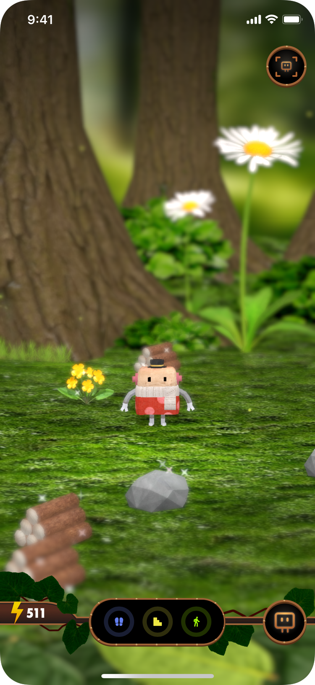

Hopsの世界にポツポツと現れる、木・石・花・ルビー、これらは、クラフトの材料です。
あなたがリアルの世界で500歩あるくごとに、1つのクラフト材料が現れます。
材料が現れるのはリアルタイムではなく、歩いたあと、数分から10分、最大で20分ほどかかります。
ですので、歩いている最中にではなく、立ち止まって落ち着いたときに、アプリをのぞいてみてくださいね。
ルビーはレアな材料なので、なかなか出てきません。
みつけたらラッキー！
クラフト材料が、同時に現れるのは、20個までです。
500歩で1個なので、20個 = 1万歩。
特にたくさん歩く日は、タップして材料の回収をお忘れなく！